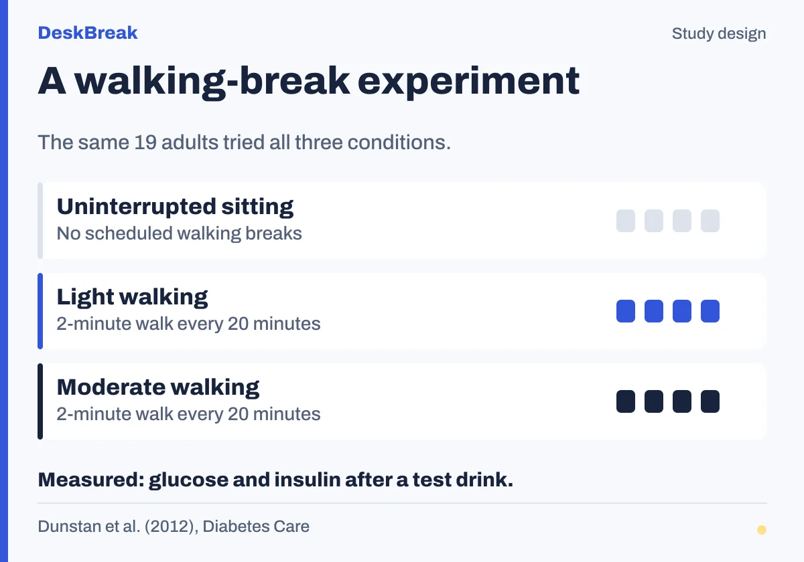

A walking-break experiment
For how often should you get up from your desk

Text description and source
Nineteen adults aged 45 to 65 with overweight or obesity completed all three conditions in a randomized crossover trial.
After an initial seated period and a test drink, participants completed five hours of uninterrupted sitting or sitting interrupted by two-minute light or moderate walks every 20 minutes.
The researchers measured post-drink glucose and insulin. The walking conditions included 14 breaks totaling 28 minutes; the diagram is a comparison of conditions, not a complete time axis.